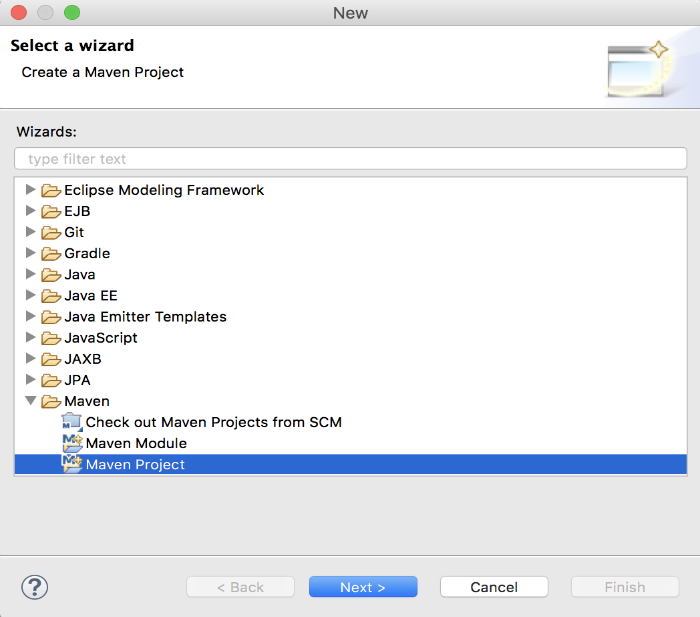
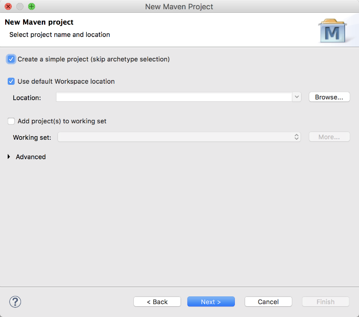
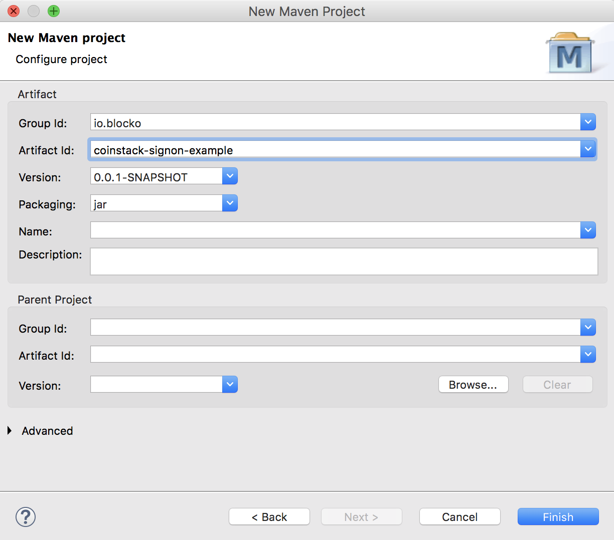
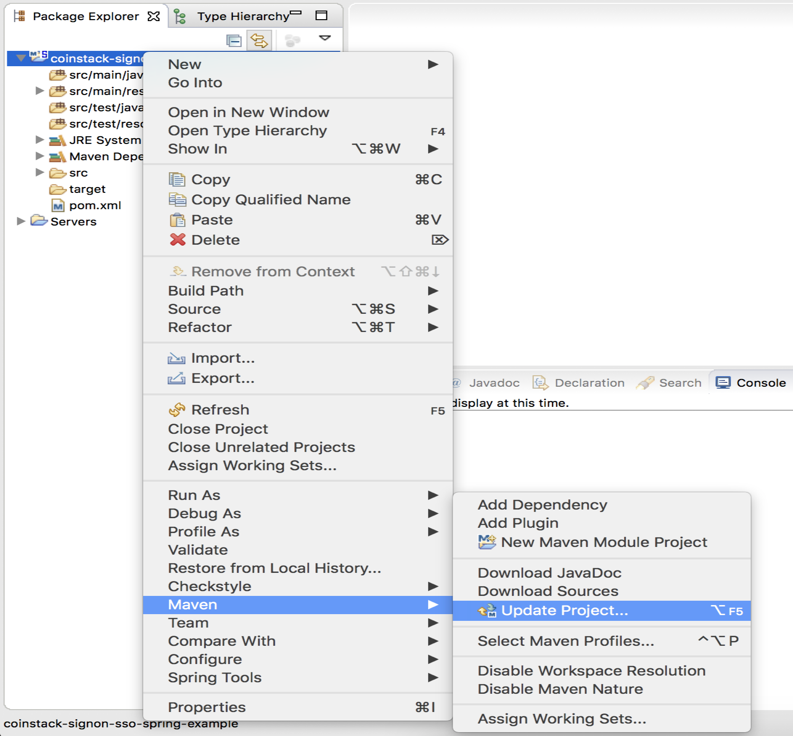

Servlet 프로젝트 설정
프로젝트 설정
본 장에서는 Eclipse와 Maven을 이용하여 개발 환경을 구성하는 방법에 관해서 설명합니다.
지금부터 생성하는 프로젝트는 서블릿 기반의 리소스 서버를 생성하는 예제입니다.
Eclipse에서 Maven 프로젝트 생성하기
개발 환경인 Eclipse에서 인증 모듈 개발을 위한 프로젝트를 생성하겠습니다.
먼저 메뉴에서 File -> New를 선택하고, 리스트에서 Maven Project를 선택하고 다음으로 진행합니다.

Create a simple project를 체크하고, 다음 단계로 진행합니다.

<group-id>와 <artifact-id>를 입력하고, 과정을 종료하면 프로젝트가 생성됩니다.

pom.xml 설정하기
개발을 진행하기 위해서는 Maven 저장소에서 라이브러리들을 가져와야 합니다. BLOCKO, Inc는 개발에 필요한 모든 라이브러리를 인터넷을 통해 제공합니다. 인터넷이 단절된 환경에서 개발하기 위해서는 해당 라이브러리를 직접다운로드받아서 프로젝트를 구성할 수 있습니다. 관련 라이브러리를 프로젝트에 포함하기 위해서는${PROJECT_HOME}/pom.xml 파일을 수정해야 합니다.
라이브러리 추가
pom.xml에서는 라이브러리를 가져오기 위해서 Maven 저장소 정보를 입력하고, 필요한 라이브러리를 의존성에 정의합니다.
<properties>
<project.build.sourceEncoding>utf-8</project.build.sourceEncoding>
<project.reporting.outputEncoding>utf-8</project.reporting.outputEncoding>
<maven.compiler.source>1.8</maven.compiler.source>
<maven.compiler.target>1.8</maven.compiler.target>
</properties>
...
<repositories>
<repository>
<id>blocko-maven-release-repository</id>
<url>https://nexus.blocko.io/repository/blocko-maven-release-repository/</url>
</repository>
<repository>
<id>blocko-maven-snapshot-repository</id>
<url>https://nexus.blocko.io/repository/blocko-maven-snapshot-repository/</url>
</repository>
</repositories>
...
<dependencies>
<dependency>
<groupId>javax.servlet</groupId>
<artifactId>javax.servlet-api</artifactId>
<version>3.1.0</version>
</dependency>
<dependency>
<groupId>org.json</groupId>
<artifactId>json</artifactId>
<version>20080701</version>
</dependency>
</dependencies>
...
서블릿 실행 플러그인 추가
서블릿을 실행하기 위한 플러그인을 정의합니다.
개발 편의를 위해 1초마다 페이지 변경을 확인, context의 경로를 /로 지정, 사용자 지정 포트(8888) 등을 설정합니다.
...
<build>
<plugins>
<plugin>
<groupId>org.apache.maven.plugins</groupId>
<artifactId>maven-eclipse-plugin</artifactId>
<configuration>
<downloadSources>true</downloadSources>
<downloadJavadocs>true</downloadJavadocs>
</configuration>
</plugin>
<plugin>
<groupId>org.apache.maven.plugins</groupId>
<artifactId>maven-compiler-plugin</artifactId>
<version>3.7.0</version>
<configuration>
<source>1.8</source>
<target>1.8</target>
</configuration>
</plugin>
<plugin>
<groupId>org.eclipse.jetty</groupId>
<artifactId>jetty-maven-plugin</artifactId>
<version>9.0.5.v20130815</version>
<configuration>
<httpConnector>
<port>8888</port>
</httpConnector>
<scanIntervalSeconds>1</scanIntervalSeconds>
<webApp>
<contextPath>/</contextPath>
</webApp>
</configuration>
</plugin>
</plugins>
</build>
...
서블릿 web.xml 파일 생성
서블릿 설정을 위해서는 web.xml 파일이 필요합니다. 파일의 경로는${PROJECT_HOME}/src/main/webapp/WEB-INF/web.xml입니다. Servlet 3.0부터 어노테이션을 사용한 설정이 가능하기 때문에 파일의 내용은 비워둡니다.
<web-app xmlns="http://xmlns.jcp.org/xml/ns/javaee" xmlns:xsi="http://www.w3.org/2001/XMLSchema-instance"
xsi:schemaLocation="http://xmlns.jcp.org/xml/ns/javaee
http://xmlns.jcp.org/xml/ns/javaee/web-app_3_1.xsd"
version="3.1">
<servlet>
<servlet-name>main_page</servlet-name>
<jsp-file>/main_page.jsp</jsp-file>
</servlet>
<servlet>
<servlet-name>user_page</servlet-name>
<jsp-file>/user_page.jsp</jsp-file>
</servlet>
<servlet>
<servlet-name>admin_page</servlet-name>
<jsp-file>/admin_page.jsp</jsp-file>
</servlet>
<servlet-mapping>
<servlet-name>main_page</servlet-name>
<url-pattern>/main_page</url-pattern>
</servlet-mapping>
<servlet-mapping>
<servlet-name>user_page</servlet-name>
<url-pattern>/user_page</url-pattern>
</servlet-mapping>
<servlet-mapping>
<servlet-name>admin_page</servlet-name>
<url-pattern>/admin_page</url-pattern>
</servlet-mapping>
<error-page>
<error-code>403</error-code>
<location>/403_page.jsp</location>
</error-page>
</web-app>
프로젝트 업데이트
pom.xml에 정의한 라이브러리들을 Maven 저장소로부터 가져오려면 해당 프로젝트를 우클릭 -> Maven -> Update Project...를 선택합니다.

선택을 완료하면, Maven 저장소로부터 자동적으로 로컬 저장소로 라이브러리들이 다운로드되어집니다.